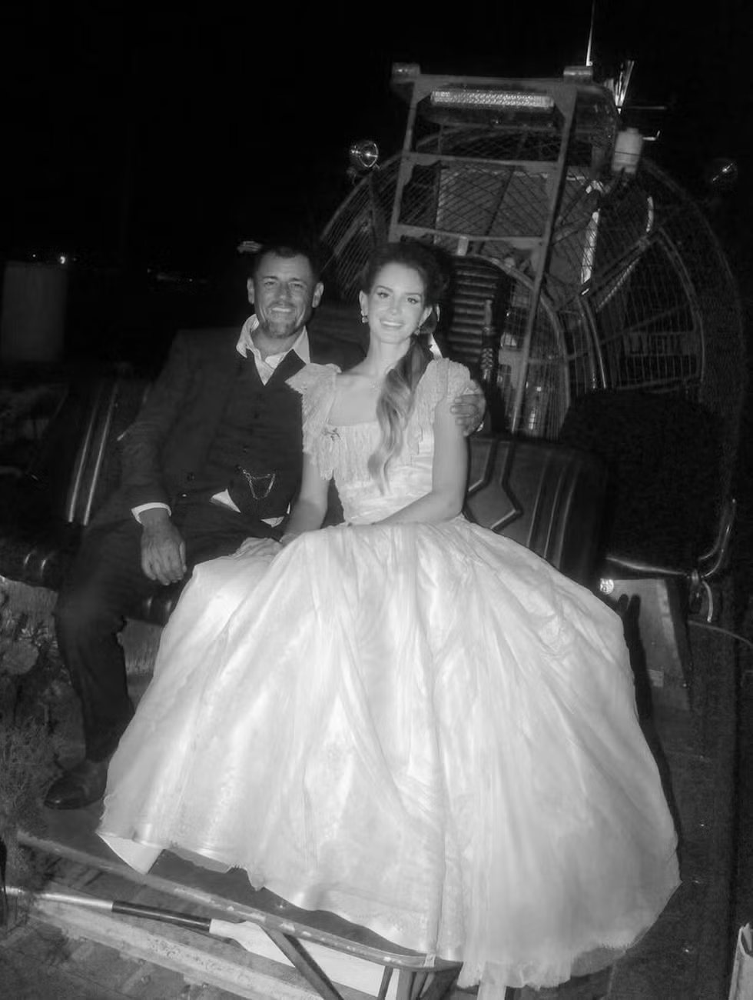

Beyond the Albums

Personal life
She married Jeremy Dufrene, a swamp-tour guide from Louisiana, in September 2024. Her family members also work with her; her sister, the photographer Chuck Grant, has worked on her visuals, and her 2026 single “White Feather Hawk Tail Deer Hunter” was co-written with Chuck, Chuck’s husband Jason Pickens, and Dufrene.
In 2020 she published Violet Bent Backwards over the Grass, a book of poetry. She also released it as a spoken-word album.
Honors
| Year | Award |
|---|---|
| 2011 | Q Award, Next Big Thing |
| 2012 | Brit Award, International Breakthrough Act |
| 2012 | Ivor Novello Award, Best Contemporary Song (“Video Games”) |
| 2013 | Brit Award, International Female Solo Artist |
| 2020 | Grammy nomination, Album of the Year (Norman Fucking Rockwell!) |
| 2024 | Grammy nomination, Album of the Year (Did You Know That There’s a Tunnel Under Ocean Blvd) |
Filmography
Short films
| 2012 | Ride |
| 2013 | Tropico |
| 2016 | Freak |
Songs for film and television
| 2013 | “Young and Beautiful”, The Great Gatsby |
| 2014 | “Once Upon a Dream”, Maleficent |
| 2014 | “Big Eyes” and “I Can Fly”, Big Eyes |
| 2019 | “Season of the Witch”, Scary Stories to Tell in the Dark |
| 2019 | “Don’t Call Me Angel” (with Ariana Grande and Miley Cyrus), Charlie’s Angels |
| 2022 | “Watercolor Eyes”, Euphoria |